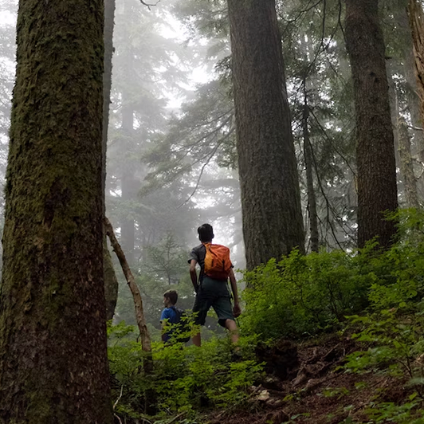

På min grenseløse odysse gjennom hvert hjørne av vår vakre verden, har jeg opplevd en livsreise som vil prege meg for alltid. La meg ta deg med på en reise gjennom tid og sted, hvor hvert land jeg besøkte ble en dypt gripende opplevelse.
Min reise startet i Nord-Amerika, der jeg vandret gjennom de mektige Grand Canyon-klippene, kjørte langs den legendariske Route 66, og utforsket de mystiske skogene i Pacific Northwest. I New Orleans, ble jeg omfavnet av den pulserende jazzmusikken, smakte på de krydret rettene, og danset bort natten i French Quarter.
Europa ønsket meg velkommen med sin rike historie og mangfoldige kulturer. I Paris gikk jeg langs Seinens bredder, besøkte Louvre-museet og smakte på delikate croissanter. I Roma følte jeg meg som en tidsreisende når jeg utforsket Colosseum og Vatikanet. I Amsterdam syklet jeg gjennom pittoreske kanaler og besøkte Anne Franks hus.
Da jeg krysset grensen til Asia, ble jeg overveldet av kontrastene og skjønnheten. I Kina utforsket jeg Den kinesiske mur og de gamle terrakottakrigerne i Xi'an. I India opplevde jeg fargerike festivaler, besøkte Taj Mahal, og lot meg fortrylle av kulturen og spiritualiteten.
Jeg vendte blikket mot det naturskjønne Indonesia, hvor jeg vandret gjennom Ubuds grønne rismarker, snorklet blant korallrevene på Gili-øyene, og ble en del av den lokale kulturen. I Australia utforsket jeg de imponerende Great Barrier Reef, gikk på eventyr i outbacken, og hørte på aboriginale fortellinger ved leirbålet.
Afrika tok meg med på en safari i Serengeti, hvor jeg var vitne til de majestetiske dyrene i sitt naturlige habitat. I Sør-Afrika besøkte jeg Table Mountain, opplevde kulturen til Zulu-stammen, og smakte på de lokale vinene i Stellenbosch.
Sør-Amerika var en symfoni av skjønnhet, fra de mektige Andesfjellene til Amazonas jungel. I Machu Picchu vandret jeg blant ruinene av det gamle Inkariket og følte en forbindelse til fortiden. I Brasil danset jeg samba i Rio de Janeiro og ble forført av Iguazu-fallene.
I Karibien sank jeg ned på hvite sandstrender og svømte i det krystallklare havet. Cuba brakte meg tilbake i tid med sin vakre gamle arkitektur og pulserende musikalske rytmer.
Midtøsten var et dypdykk i historien, fra pyramidene i Egypt til basarene i Marrakech. Jeg følte meg ydmyk ved Vestmuren i Jerusalem og undret meg over Persepolis i Iran.
Nå, tilbake til der min episke reise begynte, har jeg innsett at verden er en uendelig kilde til skatter og undere. Hver opplevelse har formet meg, og jeg bærer med meg en rikdom av minner som vil vare livet ut. Min globale odysse har lært meg at vår planet er en skatt som må verne om, og jeg ser frem til å fortsette å utforske den i all sin prakt.
GUTTA PÅ TUR
